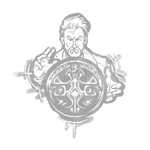

蓄力 Potential Energy
所属：维多利奥·托斯卡诺（逃生者）
| 等级 | 档位 1 | 档位 2 | 档位 3 |
|---|---|---|---|
| 数值 | 10 5 | 15 | 20 |
描述
历经数个世纪的游荡，你的奥术能力已适应了恶灵的领域，使你对其中的诸多装置获得了前所未有的掌控力。修理发电机时，按下主动能力按钮以存储潜能：修理进度不再累积到发电机上，而是转化为印记：每获得相当于1%进度的修理进度即获得1枚印记，最多可存储10/15/20枚印记。失败的修理技能检验会根据已累积的印记数量产生惩罚：未达印记上限：已累积的印记数量减少-20%。已达印记上限：发电机倒退-10%。至少累积1枚印记后，在相同或另一台发电机上再次按下主动能力按钮以释放潜能：消耗所有已累积的印记。每枚印记使该发电机立即获得+1%的进度。潜能在使用后或失去一次健康状态后失效。 "当你再深入一层去看，你会意识到……万物皆有关联。"——维托里奥·托斯卡诺